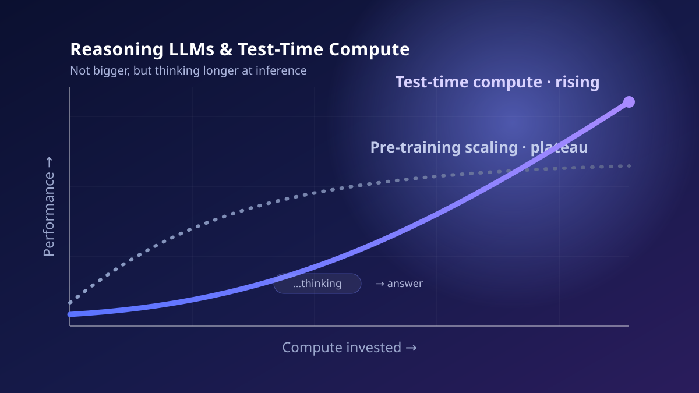

Not Bigger, but Thinking Longer
For years AI's growth formula was simple: bigger models, more data, more training compute. Then, from late 2024, the center of gravity quietly shifted — away from scaling the model and toward making it think longer at the moment of inference. This piece calmly anatomizes the background and mechanics of that shift, and the new economics in which tokens, latency, and cost are entangled.

From Bigger to Longer
For quite a while, progress in artificial intelligence followed a strikingly simple formula. Increase a model's parameters, increase the training data, and increase the training compute to digest them both — and performance improves predictably. These are the so-called scaling laws. From 2020 to 2025, I have no hesitation in calling this stretch 'the age of scaling.' In practice, too, "let's wait for a bigger model" was the default answer to almost any problem.
Yet signals appeared everywhere that the curve was no longer as steep as before. Ilya Sutskever, a co-founder of OpenAI, said publicly that the gains from scaling pre-training had reached a plateau. One sentence of his compresses the situation: "we have but one internet." Data may look infinite, but the amount of high-quality text one can actually scrape is finite, and much of it has already been consumed by training. The hardware to grow models further exists, but the fresh data to fill that hull is drying up fast.
Here a shift in thinking occurs — the realization that the lever for raising performance does not lie in training alone. People, too, do not answer instantly when they meet a hard problem; they pause and think a little longer. What if we let the model spend more computation before it blurts out an answer? This is the axis called test-time compute, or inference-time scaling. Instead of enlarging the parameters, we pour more computation into the moment of inference so the model 'thinks' longer and along more branches.
NVIDIA's Jensen Huang framed it as three scaling laws now coexisting: pre-training and post-training, which continue, and the newly arrived test-time scaling. He specifically forecast that future performance gains will lean more on inference optimization than on pre-training. In other words, scaling itself has not ended; the place where compute is poured has moved from before training to after inference. This subtle but decisive shift redrew the AI landscape over the past two years.
A cold piece of accounting hides inside this shift. Pre-training is a massive fixed cost: pour hundreds of billions into baking a model once, and inference afterward is relatively cheap. Test-time compute, by contrast, is a variable cost incurred per query — you pay as you go. This structure lowers the barrier to entry, because you can create value simply by layering a clever reasoning strategy on top of a model someone else has baked, without baking a foundation model yourself. Intelligence changing character from a capital-intensive 'manufacturing' business to an operations-intensive 'service' business — that is the economic essence of this transition.
Chapter 2. How Reasoning Models Were BornReinforcement Learning Teaches a Model 'How to Think'
What gave the idea of test-time compute a concrete body was the arrival of reasoning models. In September 2024, OpenAI released o1, trained with large-scale reinforcement learning. What was new about o1 was not simply that it answered well. It was that, before producing an answer, it unfurled a long, invisible reasoning process, broke the problem into small steps, and caught and revisited its own mistakes. Even after training was over, a new dimension opened: the more computation spent at inference, the better the performance.
What decisively popularized this current was DeepSeek-R1, released in early 2025. DeepSeek not only reproduced reasoning performance rivaling o1 but also disclosed its method in detail in a paper. The core message was provocative: even without elaborate supervised learning, reinforcement learning based on outcome rewards alone can teach a model to lengthen its own reasoning. Indeed, R1 reaches its answer while generating far more tokens per query than a standard model — sometimes 10 to 100 times as many.
This carries a large implication for practitioners: reasoning ability does not necessarily require an enormous model. A well-designed post-training routine can make a relatively small model reason impressively on a given task. In fact, some distilled models in the R1 family were small enough to run on laptops or high-end personal devices. The equation 'intelligence = size' has been shaken. Even for camps that fell behind in the race of scale, a new door — the race of method — has opened.
There is an intriguing contrast, too. o1 hid its reasoning process and showed only a summary, whereas R1 exposed much of the reasoning trace itself. This transparency is a double-edged sword. It gives researchers a window into why the model answered as it did, but it also opens a path for competitors to distill that trace and catch up quickly. Indeed, R1's disclosed method and reasoning traces triggered an explosion of open-source reasoning models. The speed at which the recipe for making intelligence spreads through a single paper — that is another defining feature of this phase.
Thinking Along Three Paths — and the Bill
The ways to use test-time compute divide broadly into three paths. The first is parallel scaling: generate several answers to the same problem at once, then pick the best by majority vote (self-consistency) or by a verifier. The second is sequential scaling: review and revise a single answer repeatedly. The third is internal scaling, in which the model adjusts the depth of its own reasoning according to the difficulty of the problem. This is what models like o1 and R1 do when they stretch and shrink their chains of thought on their own. In practice, search techniques such as Monte Carlo tree search are sometimes layered on top.
The catch is that all this 'thinking' comes with a bill. If a standard language model spends around 200–500 tokens per query, a reasoning model burns thousands to tens of thousands of thinking tokens on the same query (reported range: roughly 2,000–30,000). Tokens are GPU time, and GPU time is money and latency. When the amount of thinking rises linearly, so do cost and response time. The prescription 'make it think more' is not free.
Even so, what makes this shift attractive is the unit price. The per-token API price of reasoning models fell fast. DeepSeek-R1's published price, for instance, was reported at roughly $0.55 per million input tokens and $2.19 per million output tokens — nearly 96% cheaper than early o1's $15 input / $60 output. The problem is not the unit price but the quantity. Even if a token gets cheaper, using ten or a hundred times as many tokens per query swells the total again. The heart of reasoning economics is managing the product of the two — 'unit price × amount of thinking.'
One more hidden axis underpins this economics: the asymmetry that verification is generally cheaper than generation. Producing the answer to a hard problem from scratch is difficult, but checking whether a given answer is correct is relatively easy. That is why the strategy of cheaply generating several candidate answers and then filtering for the best with a verifier holds up. Yet on open problems where a reliable verifier is hard to build — creation, strategy, value judgment — this lever works poorly. This is precisely why test-time compute shines especially in domains like mathematics and coding, where the correct answer is clear and automatic grading is possible.
| Aspect | Pre-training scaling | Test-time compute |
|---|---|---|
| When compute is spent | Training phase (once, upfront) | Inference phase (per query, on demand) |
| How performance rises | Bigger model and data | Longer thinking · multiple attempts |
| Cost structure | Huge fixed cost, cheap thereafter | Low entry, variable per-query cost |
| Bottleneck | Data · capital · power | Tokens · latency · GPU memory |
| Representative case | Ultra-large foundation models | Reasoning models like o1 · DeepSeek-R1 |
| New failure mode | Diminishing returns · data exhaustion | Overthinking · latency blowup |
For this reason, the practical answer is not 'a model that always thinks deeply' but tiering the amount of thinking by task. Turn thinking nearly off for easy jobs like translation or classification, and switch on deep reasoning only for hard ones like mathematical proofs or complex code debugging. Even with the same reasoning model, dynamically adjusting the thinking budget can save several times the cost while preserving quality. Engineering in the reasoning era has become as much about designing 'how much to let it think' as about 'which model to use.'
Chapter 4. The Gap Between Benchmarks and RealityThe Scores Hit the Ceiling — So Why Doesn't the Work Get Done?
The rise of reasoning models dramatically lifted benchmark scores. Stanford's AI Index 2025 reported that in a single year MMMU, GPQA, and SWE-Bench scores jumped by 18.8, 48.9, and 67.3 points respectively. MMLU now sits above 88% for nearly every frontier model. The trouble is that the closer scores get to the ceiling, the more a benchmark loses its discriminating power. When top models cluster near a perfect score, the metric can no longer separate 'good' from 'great.'
This is benchmark saturation. A study that systematically examined some sixty benchmarks diagnosed nearly half of them as saturated. Add contamination — benchmark items leaking into training data — and leaderboard scores fail to predict performance in real deployment. Interestingly, benchmarks designed by human experts resisted saturation much longer. The complexity and diversity that people create make it harder for a model that learned only surface regularities to game the task.
So the weight of evaluation is shifting too. OpenAI's GDPval is a set of real-world tasks designed by experts from each industry to be representative of the U.S. economy. Experts then evaluate the model's output to judge whether it beats a human's work. It asks not for an exam score but 'can this job actually be entrusted to it?' The gap revealed by such evaluation is often painful. A model that surpassed humans on benchmarks frequently stumbles on real work, where context, tools, and responsibility are entangled.
Reasoning models have a pitfall of their own: so-called overthinking. Give the model more compute to think longer, and it may second-guess a correct answer it had already reached, re-litigate it, and switch to a wrong one. Accuracy rises with more thinking only up to a point; past it, cost soars while accuracy stalls or even falls. The intuition that 'more thinking is always better' does not always hold — this is the most counterintuitive lesson reasoning economics has met.
Where this gap hurts most is agents. In an autonomous agent, where not a single inference but dozens of judgments and tool calls link together like a chain, a small error at each step accumulates and can topple the whole result. However high a benchmark's one-shot accuracy, reliability across a long workflow is an entirely separate matter. Moreover, since each step consumes thinking tokens, an agent's cost swells to the cost of one reasoning pass multiplied by the number of steps. An agent that 'thinks more' can be smarter, but it is also more expensive, slower, and harder to predict. These three things, which benchmarks fail to show, often decide success or failure in real deployment.
Chapter 5. Korea's Place, and ClosingFrom Chasing Scale to Competing on Method
This shift offers an unexpected opening for Korean industry and research. In the age of pre-training scaling, the contest was decided by the scale of capital, power, and data. Only a handful able to bear trillion-scale compute could stand at the frontier. But the age of test-time compute is a contest of method. Post-training design, tiering of the thinking budget, combining verifiers and tools, domain-specific reasoning — in these areas even a relatively small team has room to offset scale with cleverness.
What I have repeatedly confirmed while working on applications like time-series forecasting, conversational AI, and indoor positioning is no different. In most real problems, the decisive difference came not from the model's absolute size but from how the problem was decomposed and where the computation was concentrated. Test-time compute has, in effect, given theory and tools to this old engineering intuition. Rather than waiting blindly for a bigger model, designing when and how much to let the model at hand think is often the faster road.
Of course, this axis is no panacea either. As thinking tokens grow, so do the real-world costs of power, carbon, and latency. With data-center power already flagged as AI's true limit, a method that pours ten times the computation into every query cannot expand without bound. In the end, pre-training and test-time compute are not substitutes but complements. A good base model, with just enough thinking layered on as needed — finding that balance point is the task of the next phase.
Looking back, scaling has not ended; it has changed shape. The place compute is poured moved from before training to after inference, and the definition of intelligence gained not only 'size' but 'time to think.' The simple slogan 'bigger' turned into a design question: 'when, and how much more, to let it think.' I believe this change makes AI a more manageable technology — and therefore one more people can take part in. The real contest will now be decided not by the size of the model but by what, and how, we let that model think.
References
- OpenAI, “Learning to Reason with LLMs” (introducing o1), 2024-09. The reasoning model o1, trained with large-scale RL, and the introduction of inference-time compute scaling. openai.com/index/learning-to-reason-with-llms
- DeepSeek-AI, “DeepSeek-R1: Incentivizing Reasoning Capability in LLMs via Reinforcement Learning,” arXiv:2501.12948, 2025. A four-stage pipeline (cold start · reasoning RL · rejection sampling + SFT · all-domain RL) that learns chains of thought via outcome-reward RL, reproducing o1-class performance. arxiv.org/abs/2501.12948
- Reuters / summary by D. W. Torres, “AI Hits a Wall: Ilya Sutskever on the Plateau of LLM Scaling,” 2024–2025. The plateau of pre-training gains, "we have but one internet," and the framing of 2020–2025 as the 'age of scaling.' dianawolftorres.substack.com
- NVIDIA / Jensen Huang, the three scaling laws (pre-training · post-training · test-time) and an inference-optimization-centered outlook. Related coverage and commentary. developer.nvidia.com
- DeepSeek R1 inference economics — thinking-token volume (roughly 2,000–30,000 per query vs. 200–500 for standard models) and unit price (about $0.55/M input · $2.19/M output, nearly 96% cheaper than o1), and task-tiering strategy. Cost examples in the body are illustrative. spheron.network
- Stanford HAI, “AI Index Report 2025.” One-year gains for MMMU · GPQA · SWE-Bench (18.8 · 48.9 · 67.3 points), MMLU above 88%, and other saturation signals. hai.stanford.edu/ai-index
- “When AI Benchmarks Plateau: A Systematic Study of Benchmark Saturation,” arXiv, 2026. About half of some sixty benchmarks saturated; expert-designed benchmarks retain discriminating power longer. arxiv.org/html/2602.16763v1
- OpenAI, “GDPval” — a benchmark where experts evaluate model outputs on real-world tasks representative of the economy. On the benchmark–reality gap. openai.com/index/gdpval
- “When More Thinking Hurts: Overthinking in LLM Test-Time Compute Scaling,” arXiv:2604.10739, 2026. The overthinking phenomenon in which more thinking makes the model abandon a correct answer. arxiv.org/html/2604.10739v1
Read next
 Research · Retrospective22
Research · Retrospective22Where, and What Happened: Wiring an Address Knowledge Graph to Multimodal Disaster Perception
The language of a disaster scene arrives as an address. But the judgement is made from video and sensors. Between those two languages sits a gap nobody fills for you. This year I built two pieces of software, one on each side of it — a knowledge graph that resolves addresses into coordinates and relations, and a perception API that reads four modalities on a single backbone. This is a record of trying to make them one stack, and of what is still undone.
 Tech · Issue21
Tech · Issue21Mining, Called Learning: The Generative-AI Copyright and Data-Licensing War
Generative AI was built by swallowing the writing, pictures, and code humanity has piled up over centuries. That swallowing stands behind an old shield called fair use. But in 2025, courts and markets began re-measuring the shield. Lawsuits and a $1.5 billion settlement, licensing deals spreading quietly, "content signals" closing the door on the web, and a technology that asks provenance back — this is a calm map of the war over training data.